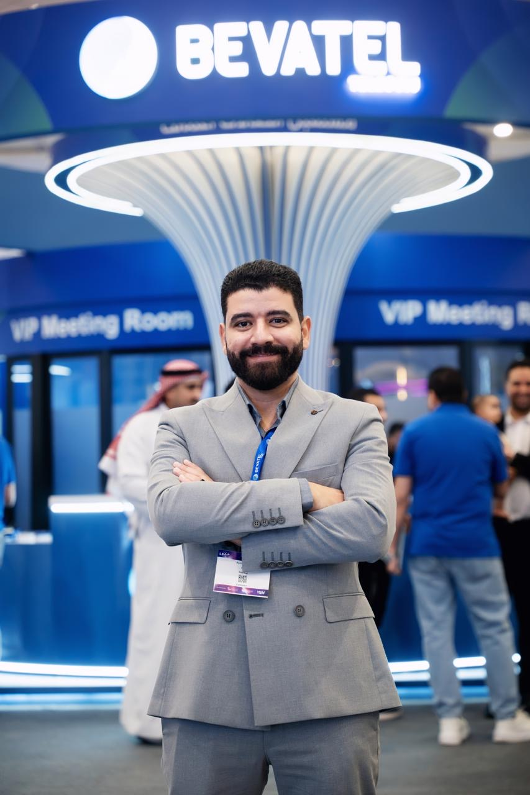

القيادة المالية • FP&A • التحول المالي
أيمن عصام
مدير رقابة مالية للمجموعة. شريك استراتيجي للإدارة. قائد للتحول المالي.
قائد مالي في السعودية أركز على تحويل البيانات المالية إلى قرارات أسرع، وضوابط أقوى، وأداء أكثر استدامة عبر بيئات متعددة الشركات والقطاعات.
FP&Aالموازنات والتوقعاتالتدفقات النقديةIFRSERP والأتمتة

+700 مليون ريالمبيعات سنوية تحت الإشراف المالي
+13 سنةخبرة مالية ومحاسبية
6 شركاتإشراف مالي حالي
+5 قطاعاتخبرة متعددة القطاعات
CFM™ · CertIFR®شهادات مهنية
الملف التنفيذي
مالية تدعم القرار، لا تكتفي بالتقرير.
أعمل عند تقاطع الرقابة المالية والتخطيط واستراتيجية الأعمال، مع تركيز على تقارير موثوقة، إدارة منضبطة للنقد، FP&A عملي، وتحول مالي يرفع جودة الرؤية والتنفيذ.
الوظيفة المالية الحديثة لا يجب أن تشرح فقط ما حدث؛ بل تساعد الإدارة على تحديد الخطوة التالية.
إدارة الأداءالموازنات والتوقعات وتحليل مؤشرات الأداء والتقارير الإدارية.
الرقابة الماليةالحوكمة والإقفال والضوابط الداخلية ودقة التقارير.
التحول الماليERP والأتمتة وإعادة تصميم العمليات المالية.
المقالات
محتوى مالي عملي لقرارات أفضل.
مقالات حول FP&A وإدارة التدفقات النقدية والتحول المالي والممارسات التي تجعل فريق المالية شريكاً أقوى للإدارة.